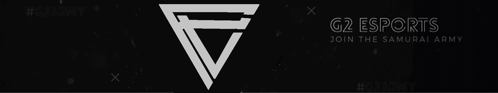
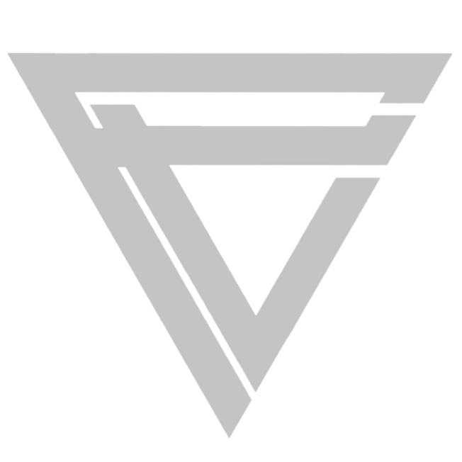

Mi is a a G2?
A G2 egy esportal foglalkozó európai organizáció amelynek a központja Berlin (Németország). Az oragnizációt 2014ben alapították Gamers2 néven akkor League of legends játékban indultak azóta már minden esport játékban megtalálható a G2

G2 Esports
Eredményeik:
- DreamHack Masters Malmö 2017
- Esl Pro League Season 5
- DreamHack Open Tours 2017
- ECS Season 1